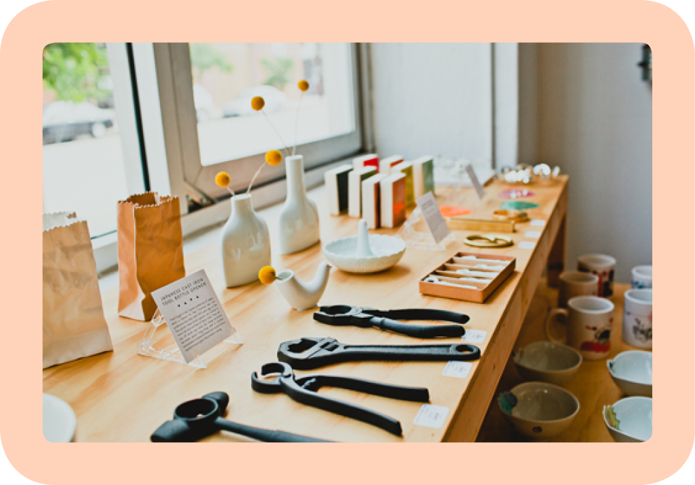

May 26, 2015
Curators / Designers /
Entrepreneurs
Describe your paths to what you’re doing now.
ted: Okay, let’s see. I studied film in college and after earning my degree, I lived in San Francisco where I started working in postproduction for film and video. I was at a nonprofit that offered training and did independent and gallery-circuit film and video work. I got my start there, and it was a great introduction to the arts community in San Francisco.
It was around that time that I met Angie. She was in a program where I was working, and we had also known of each other through hanging out in similar circles. Right after we met, I left San Francisco and traveled for a year. While I was gone, Angie took over my job, unbeknownst to me. When I returned, we ran into each other at a mutual friend’s gallery show, and we just clicked. The funny part is that I didn’t know what I was going to do for work when I returned to San Francisco; I was sort of floating around, but then I got my old job back. That evening at the show, I talked with Angie and told her, “Hey, I got my job back,” and she replied, “Oh, I got fired today!” (laughing)
That is really funny. What happened next?
ted: Angie and I started dating and she went back to school to study graphic design at California College of Arts (CCA). We started Poketo shortly after that. Many of our friends were participating in art shows, but not selling much work. We wanted to throw art shows, get our friends together, and have a lot of fun—we weren’t thinking of it as a business.
For our first event in 2003, we rented a space in San Francisco for a weekend. We had invited our artist friends to make a product, which was the Poketo wallet, and over the course of two days, we had musician and DJ friends play music during the evening. We thought it would be a good way to show art and also give people something to walk away with at the end of the night. At the time, none of us had money to buy original art, but this was a way for people to enjoy art and leave without spending too much money. We had the event, put original artwork up on the wall, and artists contributed artwork for the wallets. We had made the wallets at Angie’s school where we spent several days and late nights using the Epson printer. People were flipping out over the product we had made, and they sold out that night. It wasn’t just a fun weekend; it was one of those magic moments. When it was over and we walked back to our studio, we had butterflies in our stomachs. It was amazing!
After that, we decided to do another series. We commissioned artwork from different artists to make another set of wallets. We rented a different space and had a party, and it was great. It snowballed from there: we continued working with artists to make products, and each time we released a product, we also hosted an event.
angie: Yes, we continued to do more series, but from the beginning we didn’t want to be known as a wallet company. We decided to make other things, like shirts, stationery, and housewares, but we continued to collaborate with artists. Every season, we added something new.
How did that evolve into opening the Poketo flagship store in Downtown Los Angeles?
angie: Well, the physical space didn’t come along until 2012.
ted: Yeah, we started online. Even though we didn’t think of Poketo as a business at first, we couldn’t help but ask, “What else do we want in our lives? How can we extend this idea of art for everyday living?” That’s when we got into wallets and shirts and housewares and stationery—it was all stuff we loved and wanted in our lives. We launched Poketo online and began wholesaling almost immediately. We cold-called and walked into stores to talk to people; we went into our favorite shops and shared what we were doing.That’s how stores began to carry some of the Poketo products.
Soon after we started Poketo, we moved to LA. We were used to throwing events when we put out new collections, and it was a great way to grow our base and build a community. At the time, the idea of collaborating with artists was still new, and the artist community was small and tight-knit. We had the idea to open up a gallery and retail space, and we were looking, but nothing worked out.
Were you working day jobs during the early years of Poketo?
angie: We moved into Ted’s parents’ house so we wouldn’t have to pay rent. (laughing) Ted continued to do freelance video work, and he traveled up to San Francisco for that. But I didn’t have a job. When we decided to move to LA, I was ready to look for a job, but Ted said, “Why don’t you just concentrate on Poketo?” I thought, “Right, like that’s going to go somewhere?” But that’s what I did: because I didn’t have a job, I started to spend more and more time on Poketo. I worked on the website, I made and mailed out catalogs, I called stores; little by little, stores began to order. It was amazing to be able to focus all of my energy on Poketo.
After nearly a year of living with Ted’s parents, we had taken over their house. We were in this tiny room with our computers, a printer, and our inventory. And we had also stored boxes of inventory in his parents’ living room and garage. We finally found a space in LA and Ted’s dad was so happy when we moved out. But during that crazy year, his parents never once asked us to start looking for a place. They were so supportive.
We moved into our own house in a good neighborhood, but what we really liked about it was that it had two garages to put all of our stuff in! (laughing) We were still so young and naive that we didn’t think about renting a studio space. That’s where you start, right? How else would you do it? We didn’t have any friends who were running businesses and our parents didn’t own businesses. We didn’t know that it was possible to raise money. We just did what we could.
Tell me more about your move to Downtown LA specifically.
ted: When we decided we needed to have a separate space for work, we moved Poketo into a rented studio space, which made things more efficient. It was also a great testing ground for what we’re doing now because the studio allowed us to host events, like music and art shows. We were in that studio from 2007 to 2012, until we had more people and more stuff and had to find a bigger space out of necessity.
The studio we had rented was in the Arts District in Downtown LA, which was kind of a no man’s land around 2007. There were a few businesses popping up, but people didn’t go there to hang out. There was a space for rent not too far from our studio, and it was perfect: it was four times as big and it was street-level. When we saw it, we envisioned it with a retail space as well. It was exactly what we had wanted when we moved to LA in 2004. We moved out of the studio and into our current space, which has everything we need: our retail store, our creative office, a space for events, and a space for fulfilling and shipping our goods to customers.
 design-driven wares for at poketo’s flagshipWhen we moved in, there wasn’t much in the neighborhood and we were a little scared. At that time, the best-case scenario for us was breaking even—the store was just a bonus. But since we’ve moved in and hosted events, it has brought more and more attention to the district. More and more people have moved in and other businesses are popping up. Now, it’s a great neighborhood: it has a relaxed vibe, there are great cafes and eateries, and people are out walking their dogs, but it’s not dense. Historically there was a lot of manufacturing, so there are brick warehouses and industrial buildings, which are beautiful. There are many small, young businesses in the Arts District now and we’re all super tight.
In 2014, we opened up our second Poketo store at The Line Hotel in Koreatown. That area is in a similar stage as the Arts District was a few years ago; there’s so much attention and it’s on the cusp of exploding. The hotel itself is a beautiful Mid-Century building, but it’s been fully redesigned. We have a mini Poketo shop in the lobby, and we’re also using the space for events to bring the community together there, too.
It’s incredible to hear about your transition from an online shop to a physical retail space. You two have already done so much. What is the biggest risk you’ve taken?
angie: The biggest risk was starting. That’s the biggest challenge for most people. How do you say, “Okay, I’m going to do this!”? We didn’t know any better, so we weren’t scared; we didn’t know we were taking a risk. We didn’t know we were going to have this business, so we never plotted out the steps. A lot of people say, “That’s so hard,” but it didn’t feel like it. We didn’t realize the scope of what we were doing; we were just having fun.